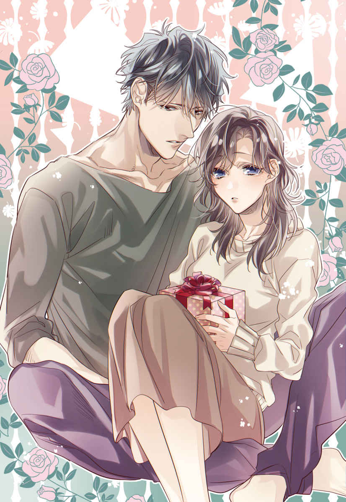
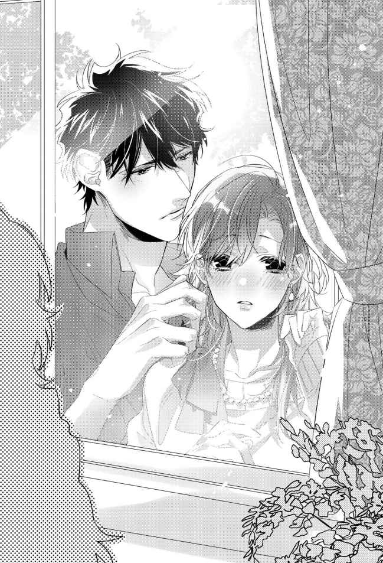

| アフターパンドラ 義兄に捧げる秘めやかな初恋【3】 (チュールキス文庫) | |
| 夜原月見 | |
| 株式会社ジュリアンパブリッシング (2019) | |

この作品はフィクションです。
実際の人物・団体・事件などに一切関係ありません。
＊
「緑もいいけど、青も素敵だね」
振袖レンタルでは最大手を誇るショールームで、なめらかな口調の店員に勧められるまま浮き足立って試着を繰り返す私は、当時十九歳。大学二年生になりたての春だった。
「......それじゃない」
それまで保護者然とソファに座って雑誌をめくっていた、付き添い役の十夜がおもむろに立ち上がる。
「あんたは、赤色が絶対に似合う」
試着済みの束の中から、十夜は赤色の振袖を抜いて私に差し出した。
三着目に羽織っていたそれは、鮮明な赤を地色にし、漆黒のアクセントが袂に入れられた振袖。
ものすごく私の好みだったけど、漆黒のアクセントがあしらわれた場所が袂の底部だったのがネックで、脇によけていたものだった。
「こちらのお振袖ですと、袖を調整するお手間を頂いてしまうかと......」
振袖を差し出したままの十夜に、店員が口調を重くする。
その振袖は恐らくは背の高い女性用に作られていた。百五十センチそこそこしかない私が羽織ると、袂が地面についてしまう仕立てになっていた。
袖を調整する――つまり、仕立て直すのであれば、レンタルではなく買い取りになってしまう。
事前にチェックしていた「おおよそのお仕立て料金」は、最低で三十万円からだった。
うちの食費は一ヶ月三万円でやりくりしている。
母を亡くしたばかりで、実質身寄りを失っていた私には、人生で一度着るだけの着物に一年間もの食費分を景気良く支払うことなんて考えられなかった。
「あ......でも、この青とかも綺麗だよ」
私は十夜の目の前で、二番目に気に入っていたレンタルで済む濃紺の振袖でくるりとターンする。
ない袖を振るって、このことだっただろうか、と思いつつ、「この赤色の振袖、すごくイイ」と目を輝かせてしまっていたのを、十夜に目ざとく見つけられていただろうかと、自分の失態を酷く後悔していた。
着物の買い取りに三十万以上の出費をするなら、十夜の部屋の家具を新調したいんだけど。そんなことを私は考えていた。
「いいから。こっちの赤色のが見たい」
半ば叱り付けるような、きっぱり断言した十夜の言葉に、どきんと心臓が大きく跳ね上がった。
「......って、思ってるはずだ。真白さんが」
付け足された過剰な優しさという名のオチに、内心で「ですよねー」とがっかりもさせられたのだけれど、
「自分の成人式に、あんたの金は一円も使うな」
と言い切って、赤色の振袖とともに私を採寸に行かせた十夜は、控えめに言って、ものすごくかなりかっこよかった。
そんなわけで、ふわっふわの毛足のショールも、ちょっとだけ厚底な黄金色の草履も、メイクボックスに使いまわせそうな、無数の蝶が舞う華奢 なハンドルをしたハンドバッグも、ヘアピンに至るまでの小物類も全て一式、十夜が揃えてくれることとなったのである。
そして、
「これ、よければもらってやって」
と成人式前日の夕食後のリビングで渡されたのは、平べったいグレーのベルベットケース。中に納められていたのは、虹色の照りを幾重にもまとった、真珠のネックレスだった。
予備球として付属したイヤリング二粒までも花 珠 真珠であることを証明する、宝石鑑別書がつけられていた。
「母親の形見で悪ぃけど。どんなに金に困っても、あの人はこれだけは売らなかったって聞いてる」
まん丸な真珠に映り込んでいた私の顔が、はっと強張った。
「そんな大切なもの、もらえない」
顔から血の気を引かせてベルベットケースを押し戻そうとする私に、十夜は首を横に振った。
「他にやる女がいない」
目を逸らしながらぼそっと告げられた言葉に、私は、「そこ、喜んでいいところなんだろうか」と微妙な気持ちになったものの、
「真白さんなら、もっといいヤツ残してそうだけど」
と俯き加減にした端正な顔に、例の影が見えて、押し返そうとする手が力を失ってしまった。
異母兄が、自身の母の形見を妹に譲る。
これも、聞くも涙語るも涙の美談だっただろう。
「......つけてくれる？」
美談になんかしてたまるか、と、当時二十歳だった私にしては頑張って、よく言ったものだと感心する。
「わかった」
十夜は押し戻されたベルベットケースからネックレスを取り出し、ソファに座ったままセミロングの髪を両手で頭上に巻き上げ、うなじをあらわにした私の後ろに立った。
私の依頼を十夜が少しも躊躇することなく快諾したことに、胸がどきどきと早鐘を打ち鳴らす。
窓には、私と十夜が映されていた。
ガラス窓を隔てた向こう側を埋め尽くす、とっぷりと暮れた夜の闇を背景に、煌々とした明かりに照らし出された室内の光景が、鏡のようにくっきり浮かび上がっていた。
十夜はネックレスを手に高い背を前に屈ませながら、私のうなじに視線を注ぐ。
――え......？
ガラス越しに確認できた十夜の表情に、私はぎくりと顔を強張らせ、目を大きく見開いた。
十夜の顔に、怖いくらい表情が一切なかったからだ。
私はそれに似た顔をどこかで見たことがあったのを思い出す。
母の部屋で私はそれを見た。解剖学の専門書に掲載された、人の顔のデッサンだ。あるいは、感情を故意に付与されず作られたマネキン人形にも似ていたかもしれない。
本能的に、背筋に悪寒を感じていた。
表情の変化に乏しい十夜だが、体温までをも感じさせない顔なんて一度も見せたことはない。
なのにどうして今、十夜はこんな顔をしているのだろう。こわごわと下ろした視線が、真珠のネックレスでストップした。
やってしまった。私は唇を強く引き結ぶ。
十夜を誘惑してみよう、なんて浅はかな思いつきで、私は十夜がひた隠しにしていた地雷を踏み抜いてしまったのかもしれない。
どうして気付かなかったのだろう。
十夜が手にしたネックレスは、彼の実母の形見だ。ケースに仕舞っていたそれに触れた瞬間、十夜は何かを思い出してしまったのかもしれない。例えば、実母との間にあった忌々しい思い出の数々といったことなどを。
十夜の実母は最愛であったはずの息子から、表情までも奪い取ってしまったのだろうか。
あくまで私の想像でしかないが、十夜の妹歴七年のキャリアが「恐らくそうだ」と訴えていた。
――やっちゃった......。
私の後ろ首でネックレスの金具を掛ける、表情を消失させ続ける十夜を、私はガラス越しに押し黙って見つめることしかできない。
ものすごく気まずいが、「ごめん、やっぱり自分でつける」と十夜を止めるには遅過ぎた。私の首は、真珠のネックレスで彩られたあとだった。
十夜の実母の形見のネックレスは、惚れ惚れするほど美しいものだった。けれど私の鎖骨をなぞる連珠は、鑑別書が証明する以上に妖艶な光を放ち、それと接する白い肌を残酷なほど冷たくさせていた。
「あ......ありがとう。これ、大事にするね」
辛うじて口にできたのは、礼の言葉だった。
十夜は返事をせず、上体を更に屈めると、私の膝上に置かれたベルベットケースに向けて腕を伸ばした。
十夜が手に取ったのは、ケースに残されていたイヤリング。
どうやらイヤリングまでつけてくれようとしていると気付き、私は唖然と口を半開きにして、頭上に髪を巻き上げていた両手を離す。
「......ピアスはしないのか？」
十夜はイヤリングを留める場所を確認しながら、私の耳元で静かに囁 いた。十夜の吐息に、ふわ、とサイドに流した髪が揺れ、背筋にぞくりと悪寒とは異なる熱っぽい疼 きが走った。
こういう気まずい雰囲気でも、あのアホ母なら、「イヤリングは、イヤーん。なんちゃってねっ」と蹴散らしていそうだけれど、アホの子を振る舞うような心の余裕はなかった。
「ピ、ピアスのほうがデザイン選べるし。みんなしてるから私もとは思ってたけど」
言い訳するかのように早口でまくしたてる私の声は、語尾を微妙に震わせていた。
ガラス窓には、ソファに座る私を背後から十夜が抱き締めているかのような光景が映されている。吐息が触れ合うほどの至近距離で十夜と接近したのは、あの日以来だ。名付けて、玉ねぎの切り方忘れて大パニック事件。
「ピアスじゃなくて、イヤリングにしておけばいいだろ」
十夜の長い指が、イヤリングのネジの照準を私の耳朶 に合わせるために添えられる。
私の耳の形を長い指先に記憶させるように、ゆっくりとした手つきで耳殻を撫でられ、甘さを帯びた痛みがじくじくと体の奥から湧き上がってくる。
「なんでイヤリング......？」
私は震え混じりの吐息を漏らす。
近過ぎる十夜に狼狽を隠せない。確かに私は十夜を誘惑しようとしたが、こんな唐突さは求めていない。
「なんでって。もったいないから」
イヤリングをつけ終えた耳朶の柔らかさを確かめるように、十夜の指が耳から顎 のラインに滑り落ちていく。

体の芯に近い深い場所で、急激に熱を上げようとする疼 きに耐え切れず、私はびくんと体を跳ね上げるように揺らした。
なんとか声は上げずに済んだ。窓に映された女の顔も、真っ赤に染まってはいるけど、怯えた表情はしていない。
「悪ぃ」
ほぼ同時に、十夜の体が弾けるように離された。
意外だったのは、小声で謝罪した十夜の顔まで赤くなっていたことだ。
つい数瞬前まで、ちょっと怖くなるくらいの無表情を保っていた整った顔に、十夜らしくない恥じらいが浮かんでいて、「十夜でもこんな可愛い顔しちゃうんだ」と私は驚愕 した。
「......風呂行ってくる」
十夜は私から顔を逸らすと、逃げるようにリビングを出て行ってしまった。
お風呂？
リビングに取り残された私はポカンとするしかない。
私の匂いを消しに行ったのだろうか。火照 った顔を二の腕あたりに近づけクンクン嗅いでみたが、服からは十夜と同じ柔軟剤の香りしかしなかった。
大切に保管していたネックレスを私に譲るからには、何かしら意味があったのだろうと思うのだけど、そう思いたいのは私だけで、「他にやる女がいない」の言葉以上でも以下でもないのが真相のようにも感じられて、私は終始微妙な気持ちでいた。
ちなみに、母は真珠のネックレスを二本持っていた。
一本は花珠だったが、十夜から譲られたものと並べると、正円でない歪 さが一目瞭然で、大きさもコンマゼロミリ単位で不揃いのものだった。
その代わりもう一本のネックレスのほうは、虹色の艶を持たない真っ白なものだったのだけれど、珠の大きさが全て揃い、薔薇を模した銀色の止め具に造幣局の刻印が入れられた高級品だった。
母の仕事柄、地味だけれど安っぽくないネックレスが必要だったのだろう。
私は十夜から譲ってもらった真珠のネックレスを、十夜には内緒で、仏壇の奥にある引き出しに仕舞いこんだ。
積極的につけるべきものだっただろうが、十夜がこの家にやって来るに至る原因を考えたら、私はどうしてもつけることができそうになかったから、母真白に預けたつもりだった。
そんなわけで、本来ならキュンなアクシデントはかなり苦い思い出となってしまった。
だけど、十夜が長く深く抱えて続けてきただろう問題をこの目で見ることができて良かったのだと、私は今も疑わない。
＊
枯れ葉が舞い散る秋が去り、季節は冬に移ろうとしていた。
年が明けたら、まんじりともしないうちに母の十回目の命日がやってくる。つまり私の恋が死ぬ日まで残り数ケ月しかないということだが、私は緊張感ゼロで今日も過ごしていた。
「で、どうだった？ 大人の晩酌冷凍シリーズを試食してみて」
私はテーブルの向かいに座す十夜に訊いた。十年の期限が迫っているのを忘れたわけではないけれど、すっかり忘れた振りをして毎日を過ごしていたい。
「......マズくはない」
「本当っ？」
「その代わり特別うまくもない」
「それ、普通ってことだよね......」
十夜は箸を手に持ったまま、考え事をするようにどこか遠くを見る目をした。陰のあるイケメンが真剣に頭を悩ます仕草は、さながら腐敗した俗世を憂うような儚 さが漂っていて、冷凍食品試食の感想を考えているとはおよそ想像できない。
私は大学卒業後、食品会社の冷凍食品開発部門に就職している。十夜に試食してもらった『大人の晩酌冷凍シリーズ』は入社当時から私が手掛けている商品の一つで、既に十個以上もの製品化がなされたヒット作だ。
「じゃあさ、味付けはどうだった？ もっとしょっぱいほうが良かった？」
まだ考え込んでいる十夜を、イエスかノーだけで返答可能な方向へと誘導してみる。
「いや。これ以上味付けが濃いと、逆に食欲が失せる」
私は「なるほど」と頷いて、手元の試食メモに十夜の言葉を書き付けた。
十夜に食してもらったサンプルは、だし巻き卵である。市場に出回っているだし巻き卵は業務用が大半を占め、特にスーパーのような小売店の店頭で家庭用はあまり見かけない。水分が多い卵料理は、そもそも冷凍に不向きとされている。家庭用冷凍食品で見かける卵料理にオムレツが多いのは、完全に火を通しやすく水分含有量に味を左右されにくいためで、理にかなっている。
ちなみに今回十夜に出したサンプルはナンバー千の記念号だったのだけれど、十夜の感想を聞くにつけ、どうやら失敗作となりそうだ。
「試食ありがとう。口直しに何か作ろうか。食べたいのとかある？」
テーブルに並べた試食品の皿を片付けようと椅子から腰を上げる。
「じゃあ、だし巻き卵」
「え、なにその即答。というか、だし巻き卵って私が作っても甘くならないよ」
「口直しなんだろ。あんたが作るだし巻き卵のほうを食べたい」
素知らぬ顔で片付けを続けるが、皿を持って十夜に背を向ける私の顔はたぶん真っ赤だ。
さすがモテ男と感心してしまう。同じ卵料理でも、普通であれば同じ品目を選んだりしないと思う。「じゃあ、卵焼き」とか言うはずだ。なのに十夜は私が作っただし巻き卵をリクエストしてくれたものだから、心臓がどきんと跳ねるのを止められない。
十夜は天然の女たらしに違いない。女が勘違いしそうになる台詞をさらっと混ぜ込んでくるのは、正直ずるいと思う。
おはよう、いただきます、行ってきます、好きだ、ただいま、おやすみ。そんなふうに不意打ち的に言われたら、私でなくとも誰だって「今、何て言われたの？」と気になってしまうじゃないか。
――十夜と別れた元カノジョさんたちは、十夜の女性遍歴についてどう考えていたんだろう。
たぶん十夜は、常に振られる側だったのではないかと思う。妹のために門限十時を死守し、セックスした痕跡を帰宅してすぐシャワーで洗い流す男なんて、私だったら願い下げだ。
......なんて強がってみるけれど、本当は歴代カノジョさんたちが羨ましくて仕方なかったりする。
自分で選んだこととはいえ、十夜の前で女ではなく妹でいるしかない私は、カノジョさんたちと同じ土俵にすら立てない。
悲しいやら悔しいやら、今日も私の心はせわしない。そんなごちゃつく気持ちを丸呑みするように、私はペールに捨てようとしていた失敗作のだし巻き卵の残りを、まとめて一気に頬張った。
「......何やってんだ、あんた」
私の奇行に十夜が怪訝 そうにした。
「ふてるのはひのびなふて」もぐもぐしながら、ごっくんをして言い直す。「捨てるのが忍びなくて」
「マズくはなかったんだ」言い訳するように、十夜が溜息を吐いた。
「おいしくないなら仕方ないよ」私は卵を取り出そうと冷蔵庫を開ける。
マズくはないけど美味しくもないだし巻き卵を飲み下しながら、唐突に思い出したのは、海で溺れている人の救助が遅れがちになる理由に関する話だった。
どこで聞いた話だったか――確か、海水浴における危険を指摘するテレビニュースの特集コーナーだ。
海水浴で溺死してしまう人の多くが、実は水泳が得意なのだそうだ。確かに考えてみれば、そもそも水泳が苦手だったりカナヅチだったりする人は浅瀬でビーチバレーに興じるのがせいぜいで、足がつかなくなる場所にまで泳ぎに行ったりなどしないだろう。
だからこの話の問題点は、砂浜から離れた場所にまで泳ぎ出て溺れてしまった人に限定されるのだけれど、溺れる原因はいくつもあり、海岸に打ち寄せた波が一転して沖に方向を変える、離岸流に巻き込まれて流されたというケースも中にはあるらしい。
そして溺れた自覚がある人は、当たり前だけど、海岸にいる人たちに向かって懸命に手を振ったり声を上げたりして助けを呼ぶ努力をする。死なないためにそうする。
しかし驚くことに、海岸の安全な場所にいる人たちからは「あいつ、楽しそうに遊んでるな」というふうに見えるそうで、手を振り返すこともあるのだという。
......どうしてそんな話を思い出してしまったのだろう。たぶん、私の恋が余命数ケ月の死線をさ迷っているせいだ。
私は十夜に溺死寸前なのだろう。辛うじて海面から顔だけ出して酸素を求めても、私が得られるのは私が求めていなかった十夜ばかりで、苦しくて仕方ない。
懸命に「誰か助けて」と安全な岸に向けて手を振り大声で救助を要請してみるが、砂浜でバーベキューを楽しんでいるパンドラさんは「でも、最後に希望を残してあげたでしょう？」と笑顔を浮かべて溺れる私に手を振るし、全能の神ゼウス氏は「あれほど沖に出てはいかんと言ったでしょうが」と焼きたての肉を頬張りながら自己責任論的な説教を垂れるのだ。
パンドラの箱を開けた私は、咎人 とそしられなければならないほどの罪を犯していない。
私はただ、人を好きになっただけだ。断罪されるほど罪深くなんてない。
けれど......だけど、私は十夜にとっての「最後の希望」をどうしても奪えない。
家族。十夜はずっとそれを欲しがっていた。
だから私は今日も、失敗作を無言で胃に向けて強制送還するむなしい行為を続けているのだ。
＊
私が就職したのは、遡ること七年前の話である。
無事大学を卒業した私は、中規模食品メーカーに入社した。
もともと食に興味があった私は、〝愛情は時短できる〟を商品キャッチコピーに使っていたそのメーカーが、家庭向け総菜や冷凍食品の新規市場開拓に力を入れていることを知り、三年次からパンフレットを取り寄せたり試食会に参加したりして積極的に就職活動に励んだ。
難があるとすれば就職から五年目までに、丸一年間の東北工場異動研修が課されていたことだった。
十年のうちの一年間は十％にも相当する。そんなに長い時間を十夜と別に暮らし、消費していいのだろうか――迷いながらも、私は就職を優先することにした。
時短料理が得意な私だが、実は市販製品に憧れていた。いわゆる出来合いと呼ばれるものだけれど、「今日の夕食、何にしよう？」と五限目に頭を悩ませるのが日課と化していた私の生活に、安くてラクできてしかもおいしいという選択肢があったら、何か部活動に入部していたかもしれない。
家事労働の中で最も時間がかかるのは間違いなく炊事だ。一日二十四時間のうち、最低一時間はご飯作りに費やしている。買い出しや食器の片付けまで含めたら、二時間近くにも及ぶだろう。
料理は毎日のことだからあまり意識してこなかったけれど、改めて考えると大変な労力だと思う。だからこそ、外食と内食の中間に位置する中食に興味を持っていた。
新人採用人数十名に対し、数十倍の倍率をかいくぐって内定を手にした私は、内定通知書を仏壇に置いた。母が私に食卓を任せてくれなければ得られなかった内定だった。
翌朝、仏前に紅の薔薇が一輪添えられていたのには驚いた。内定通知書が届いてすぐの夕方、出張中の十夜にはメールで報告していたが、まさか私が寝入っていた深夜のうちに帰宅していただなんて思わない。
――どんだけシスコンなんだろ。
最終の新幹線に乗り込み、タクシーを使って帰宅していただろう十夜の朝食を作りながら、ニヤニヤが止まらなかった。砂糖多めの卵焼きを作ってしまったのはご愛敬 。
「......おはよう。内定おめでとう」
いつもの無表情で十夜は私を祝福し、テーブルに載せていた朝刊を広げた。
「うん、ありがとう。......お花も。綺麗だね」
「出張先で買った花だから、水切りしてやって」
「水切りとか、よく知ってたね」
「東京まで帰るって言ったら、花屋が教えてくれた」
仏頂面のイケメンがどんな顔をして教わったのだろうと思うと、更にニヤニヤとしてしまう。
「――......内定が出た会社は、一年間の東北研修があったところだろ」
「え？ あ、うん。そこだけど。ダメだった？」
「駄目っていうわけじゃない」
十夜は即答し、しばし無言で考え込んでから、
「あんたがいなくなったら少し寂しくなると思った」
と、ぶっきらぼうそのものに早口で言い切った。
もしそこで私が、「十夜と離れる生活になったら私だって寂しいよ」と甘える器量があれば、少しくらい美しい溺死体に仕上がったのだろうか。
けれど私がパンドラの箱に誓約したのは、「十夜の妹として十年生きること」だ。恋愛成就はオプションでしかない。だから私はにっこりと笑って言ったのだ。
「十夜って過保護だよね」と。
「......保護者みたいなもんだろ」
と低い声が返ってきたので、この時も私はちゃんと妹でいられたはずだ。
そんなふうに私の恋は、一進一退どころか退路の一途を辿 っていった。
一歩進んで二歩下がり続けるばかりだから、一日一歩の勘定にもなってくれない。
だけど後退したぶんは、家族としての絆みたいなものを強くしていた時期にあたる。ほふく前進みたいな遅いスピードなりに、私の恋は着実に育っていたということだ。
――十夜とは、このまま家族でいたほうがいいのかもしれない。
そう思う日もあったが、同じ家の中にいる十夜の体温が欲しくてたまらない夜もあった。そんな夜は決まって、布団を頭から被って泣いていた。
――なんでよろめいてくれないの......？
妹に手を出す兄なんて鬼畜だ。それを望む妹なんて、絶対に頭がおかしい。
よろめかない十夜が正常なのであって、「妹を続けて十年以内に十夜が私に手を出してくれるなら、ＤＮＡ鑑定書の件を打ち明ける」なんて賭けをした私は、醜い溺死体になってしかるべきだろう。
＊
『東北工場製造部門へ一年間の研修を命ずる』
と私に辞令が下されたのは、二十七歳の時。社会人五年目にしての出来事だった。
――『前から言ってたけど、今日は送別会だから帰りは遅くなるね』
私は十夜にメールをした。明日の今頃には東北工場入りが予定されている私のために、同僚が送別会を開いてくれたのだ。
「一年なんてあっという間だよ」
「そうそう。現地の社員と仲良くなった頃に研修終了になっちゃうから、延長制度が欲しくなるくらい」
「でも寒い場所に寮があるから、体には気を付けてね」
同僚らが激励がてらで次々にお酒を注ぎに来てくれた。
「はい、ありがとうございます。一年間研修、しっかり頑張ってきます」
抱負を口にしながら先輩たちの酒を断らずに飲んでいたら、そのうち気分が少しばかり悪くなってしまった。
引き継ぎ業務で目まぐるしい日々を送り、疲労を溜めまくったせいだろう。
このまま飲み続けたら悪酔いしてしまう。明朝新幹線に乗ることも考えて、私は二次会で引き上げることにした。
「大丈夫か？ 車酔いしたら早めに言ってくれ」
同じ方向に帰宅する男性上司とタクシーに相乗りしたのだが、アルコールでふわふわした頭で、
――そういえば十夜に、二十歳のお祝いに飲みに連れて行ってもらう約束、守ってもらってなかったな。
と、全く関係ないことを考えていた私は、すでにちょっとした酔っ払い状態だった。
タクシーが見慣れた我が家の前で停車し、
「相乗りさせてもらって助かりました。お疲れさまでした」
ぺこっと上司にお辞儀しながらタクシーを降りようとしたら、道路に足を着き損ね、ふらついてしまった。
「危なっかしいな。玄関まで手を貸すから、歩けるか？」
私に続いて上司がタクシーを降り、手を差し出した。足元が覚束 なくなるような無茶な飲み方は断じてしていなかったけれど、いつもの倍くらい酔っているのは確かだ。
「ありがとうございます、すみません」
私は上司と手を繋ぐようにして玄関をくぐった。
自動点灯で照明が点された玄関扉の内側に入ろうとした時だった。
「おかえり」
リビングからこちらに向かって、十夜が歩いてきた。
十夜は一目で状況を察したらしい。
「兄です。朝子がお世話になっています。送って下さってありがとうございました」
きちっと角度をつけたお辞儀をし、私の肩を軽く抱くようにして靴を脱ぐよう促した。
十夜らしいとても礼儀正しい挨拶だったが、声のトーンがいつになく低いのが気になった。
――妹の上司を威嚇する兄って一体......。
シスコンもここまで来たら重症だ。
職場では「過保護な兄がいて門限が厳しい女性社員」で通っている私である。もちろん上司も知っているので、
「ご家族がいるなら安心だね。じゃあ俺はこれで」
と苦笑しながらタクシーに戻って行った。
「水要るか？ 風呂は明日にしておけよ」
酔いのせいか、十夜の言葉が胸に鋭く突き刺さった気がした。
「......過保護なお父さんだね」
私は半ばうんざりしながら三人掛けのソファにごろんと横になった。目を閉じた次の瞬間には眠気が疲労感を上回り、私の意識は睡魔に誘われるままアルコールでぐるぐる回る暗闇に引きずり込まれてしまった。
「――......ったく」
困り果てたようにも苛立っているようにも聞こえる溜息が落とされた。
きっと十夜はソファで寝てしまった私を見下ろしながら、酒癖の悪い面倒な妹だと思っているだろう。
「酒の飲み方を教えておくんだった」
それ十夜が言っちゃうんだ。二十歳の約束を守ってくれなかった十夜にむくれてみるが、既に夢うつつの中の私はすやすやと気持ちよさそうな寝息を立てていた。
穏やかに波を打つ浅瀬をたゆたうような心地よい眠りの中で、私は夢を見る。
久しぶりに見た夢は、振動音に似た低いモーター音から始まった。冷蔵庫のモーター音だった。そこにかぶさったのは、懐かしい母の声。
「ド忘れしちゃった時は、冷蔵庫を開けると思い出せるよ。ここ、テストに出るから覚えておいて」
楽しそうな口調で母が冷蔵庫を開ける姿を、私は何度か見たことがあった。私が見ている夢は、その記憶をなぞっているものらしい。
「教えて、パールちゃん。私ド忘れしちゃったみたいなんだけどね」
冷蔵庫に親しそうに話しかける母は残念な人そのものだったけれど、私は懐かしさのあまり声を掛けそびれてしまう。
「はっ！ 思い出してしまった！ 家の火災保険、更新手続きしないといけなかったんだ！」
ありがとうパールちゃん！ と顔を輝かせた母に、私も、「しまった、私も更新手続きするの忘れてた」と額に手を当てた。
一般家庭における冷蔵庫の開閉回数の平均は、一日に三十五回、というデータがある。
その大半を占めるのは、炊事を担当する主婦が主だから、「ド忘れしたら冷蔵庫を開くと思い出せる」と言っていた母の言葉は、あながち間違いではなかったかもしれない。
我が家の場合、平均三十五回のうち三十三回は私になる。十夜が開けるのは、朝晩それぞれ、ミネラルウォーターを取り出す時くらいだ。
だからどうした、というわけではないけれど、母に会いたいな、と思った。胸の奥を焦がすような恋しさに泣きたくなってくる。
もし今すぐ母に会えるなら、「どうしてＤＮＡ鑑定書を私に残したか」なんて面倒なことは絶対に訊かないと、世界中の全員に約束するのに。
らしくもなくそんなことを私は夢の中で考えていた。
借り上げアパートの寮生活とはいえ、初めての一人暮らしが不安でたまらないのだろうか。たった一年間の期間限定の一人暮らしに、どうしてこんなに揺らいでしまうのか。
「......こんなところで寝るな。風邪ひくだろ」
ふわ、と私の体がソファから宙に浮いた。十夜にお姫さま抱っこされたのだと気付いたのは、階段をのぼり始めてからだった。すらっとした長い脚が階段を一段上がるたびに、とん、とん、と私の体が規則的に揺らされる。力強い十夜の腕から体温がダイレクトに伝わってきて、心拍が一気に上昇するけれど、どうしても眠気に勝てない。
「......思ってたより、あんた重いな」
階段をのぼる振動に紛れ込ませるかのような小さなぼやきに、「ダイエット失敗してすいませんでした！」と抗議したいのに、健やかな寝息を伴って固く閉じた私の目は開く気配すらない。
自室のベッドに静かに横たえられたが最後、完全なる熟睡状態に陥ってしまった。
......だからきっと夢なのだ。
「変な男に引っ掛かるなよ」
と憂鬱 そうに呟いた十夜が、私の頬に口付けていったのは。
十夜が部屋から出て行ってから、私は夢の中で反論した。......厄介な男になら引っ掛かってるんですけどね。と。
まるで焼かれているかのような、局所的にひりつく高熱を頬に感じながらも、私は不貞寝し続けるしかない。
変な男に引っ掛かるなよ。たったその一言で、私は十夜から妹以上に思ってもらえていない現実を改めて知ってしまった。
けれど世に生息する三十一歳の兄たちは、寝入ってしまった二十七歳の妹の頬にキスをしたりなんかしない。たぶん。
なんでキスなんかしたのか、部屋を出て行ったばかりの十夜のあとを追って、問い詰めてしまいたい衝動を眠気に委 ねて我慢した。
理由を訊いた瞬間、私は十夜の妹ですらなくなってしまうのがわかりきっていた。
十夜は絶対にこう言っていたはずだ。「夢でも見たんだろ」と。
――こんな恋、もうやめたい。
幾度もよぎった切なさが、どきどきと跳ね上がろうとする胸を戒めるように、ぎゅうときつく絞り上げていた。
涙は零した気がする。けれどそれすらも夢だったかもしれない。
＊
来月、母の命日がやってくる。
余命一ケ月の恋は相変わらず停滞しているが、十夜は三十三歳、私は二十九歳と平穏無事に歳を重ねてこれたのは喜ばしいことだ。
......と無理やり納得しようとしている私は、門前の道路の雪かきをしながら大きく息を吐いてみた。溜息に似た吐息が真っ白に染まり、曇天から舞い降りる粉雪に溶け込むように消えていく。
「あら朝子ちゃん、おはよう。朝から精が出るわね」
隣家のおばさんが雪かき専用スコップを手に出てきた。
「おはようございます。十夜が青年団の雪かきに駆り出されたから、私もちょっとだけ早起きしてみました」
「ひょっとして朝子ちゃん、うちの前も雪かきしてくれてたりした？」
「先週の大雪の時は、うちの分までおばさんにしてもらってましたから」
小型のママさんダンプを左右に揺すって雪を落とした私に、おばさんは感心したように何度か軽く頷きながら笑顔を返してくれた。
「十夜くんにも、いつもありがとうって言っておいてくれる？ うちの息子なんて、こんな大雪でも何の役にも立たなくって」
隣家には十夜より少し年上の息子さんが一人いる。結婚して近所の建売住宅を買ったので、おばさんとは別居世帯ということになる。
今も母の親戚として暮らしている十夜は、昔と変わらず不愛想で無口だけれど、ご近所さんから総じてウケがいい。特に母くらいの年齢をした隣家のおばさま世代には熱烈に支持されていて、「うちの息子と交換したいくらいだわぁ」と溜息交じりで持ち上げられることが多い。
結局十夜は青年団副団長のお役目を断って今に至っているが、少子高齢化が社会問題としてクローズアップされがちな昨今において、いずれ逃げきれなくなる時がやって来るはずだ。
特に今年は近年まれに見る大雪だ。年明けから休む間もなく襲来する寒波によって雪が降り続く毎日で、交通事故が多発している。
そして今朝のお天気も、雪。十夜は主要交差点の除雪作業に駆り出されていた。
「そういえば、そろそろお孫さんが産まれる頃じゃないですか？」
二人して道路の雪かきをしながら話題を振ると、おばさんは嬉しそうに顔を上げた。
「そうなのよー。嫁がね、来月で臨月なの」
「性別はわかってるんですか」
「嫁と私は知ってるのよ。だってお腹の赤ちゃんの写真に、アレがついてるんだから」
ふふ、と可笑しそうにおばさんが肩をすくめた。
「息子には内緒なの。でも、絶対気付いてるわよ。だって、服が青ばっかりなんだもの」
「あー、それ丸バレですよね」
「でしょ？」
ご近所さんとのたわいない会話は平和そのもので、愛すべき光景だ。......けれど私は知っている。町内会の人たちからも「朝子ちゃんと結婚してあげないの？」と十夜がせっつかれていることを。「俺は居候の身なんで」と十夜はかわし続けているようだが、結婚適齢期の男女が二人きりで一つ屋根の下に住まっておいて、ただならぬ関係には程遠いクリーンな関係だと誰も思っていない。
いずれ時期が来れば。......と、隣家のおばさんも生暖かく見守っている気配を、こうしている今もひしひしと感じるようになっていた。
――でも、そんな関係ももう終わる。
余命一ケ月の恋は、その日が来れば枯れてしまうだろう。蕾 が膨らむところまで育った恋だった。花を咲かせないまま枯れる恋は実を残さない。
私の恋が結実しないことが確定したその日に、私は今度こそ十夜の妹になる。
「そうそう、朝子ちゃん。ミケさんの件はどうなったの？」
雪かきの手を休め、内緒話でもするように声を潜めたおばさんによって、私は我に返ったのだった。
ミケさんとは、小道を挟んで向こう側の一軒家に住んでいる、六十歳代の女性の通称だ。
ミケさんは自立した子どもたちと別居して、夫に先立たれた一人住まいの二階建て家屋で常時五匹もの猫を飼っている人なのだが、その猫がこぞって三毛猫なのでミケさんと呼ばれている。
ミケさんの夫は臨終のその時まで、私の母が勤めていた病棟に入退院を繰り返していた。だから私が子どもの頃は、ミケさんに随分可愛がってもらった記憶がある。
そんな心優しい、生粋 の三毛猫スキーのミケさんがうちに怒鳴り込んできたのは、先週のことだった。
『うちのハルコちゃんは足を切断しちゃったのよ！ 十夜さん、どうしてくれるの！』
怒り心頭で息巻くミケさんをなだめながら話を聞くと、カラス対策を進めていた町内会の仕事の一環として十夜がゴミ収集所に設置した網に、ミケさんの愛猫ハルコちゃんが足を引っ掛けてしまう事故があったのだそうだ。
ちなみにミケさん宅の猫の名前は飼い始めた順に、ハルコ、ナツコ、アキコ、フユコ、ハルエである。四季をローテーションさせているシンプルな名付けに思えるが、一度として同じ名前を使い回したことがないとミケさん本人は豪語している。
そんな、目の中に猫を入れても痛くないほどの愛猫家いわく、
『長い間猫を飼っているけど、こんなことは初めてよ。網の設置が甘かったから、ハルコちゃんは足を切断しちゃったのよ。かわいそうに！』
だそうだ。
とんだ言いがかりだ。十夜は網の設置を間違えるような凡ミスをするような人ではない。百歩譲ってミケさんが言うように設置が甘かったとしても、十夜は責任を負うべき立場にない。
文句があるなら町内会のほうにどうぞ！ 勢い込んでそう怒鳴り返そうと、玄関から身を乗り出したのと同時に、十夜の落ち着いた低い声が私を遮った。
『次に網を設置する時は、手順通りしっかり掛かっているか必ず確認するようにします』
十夜はすぐ頭を下げたが、ミケさんの怒りは一向に収まらない。むしろ火に油を注ぐが如く、手が付けられない状況になってしまう。
『ハルコちゃんに次なんてないのよ、どうしてくれるのっ』
その一点張りで喚 き散らす騒ぎを、まず隣家のおばさんが聞きつけた。
『ミケさん。十夜さんだって悪気はなかったんだから......』
何とか仲裁に入ろうとしてくれたのだけれど効果は薄く、とうとう町内会会長が呼び出される騒動にまで発展してしまう。
『十夜さんはいつも通り仕事をしてくれただけでしょう。第一、家ネコを外に逃がしたあなたに責任がある話だよ。いい加減にしなさいよ、ミケさん』
ぴしゃりと断罪した町内会長の凄みに負けたのか、ミケさんはぐっと下唇を噛み締めた。
多勢に無勢。ミケさんはまだ何か言いたそうにしていたが、
『十夜さん、これで済むと思わないでちょうだい』
と捨て台詞を吐いて帰って行ったという顛末だった。
『十夜は全然悪くないよ。絶対気にしちゃダメだよ』
玄関に集まっていたご近所さんたちの顔ぶれが去ったあと、私は十夜に声を掛けた。
『怒鳴るだけでミケさんの気が済むなら、俺は気にしない』
そう言って十夜は微笑したのだけれど、その後しばらく、いつにも増して抜群に無口だったり、夜間冷蔵庫が開く気配が頻繁だったりしていたから、言いがかりだとわかっていても酷く落ち込んでいるのは明らかだった――
「十夜くん、おかえりなさい」
おばさんの声で私は再び我に返る。ミケさんとの間にあったことを思い出していて、十夜の帰宅に気付くのが遅れてしまった。
「おはようございます。除雪、お疲れさまです」
道路の向こうからこちらに向かってくる長身が、おばさんに向かってぺこりと頭を下げた。その左腕には〝青年団〟と黒字で書かれた、目が覚めるようなレモンイエローの腕章が巻かれている。
「十夜くんは、あちこち引っ張り出されて大変でしょ。この間のお正月だって、隣町であった火事の消火活動にレンタルされちゃった人気者だものね」
にこにこ笑顔のおばさんに、十夜はいつもの仏頂面で無言を返す。
お隣さんにくらい、もう少し愛想があってもいいのではと思ってしまう。なのに、おばさんの目は爛々 と輝いているから不思議だ。あたかもドーム公演に立つアイドルに団扇とペンライトを全力で振りまくる女子のような、熱っぽい視線ですらある。
「そうだわ。朝子ちゃんちに差し入れようと思って、おでんを沢山作ってあったの。よければ持って行ってくれないかしら」
差し入れと言うからには十夜宛てなのだろう。これから出勤の私としてはとてもありがたい。
「ぜひっ！ あ、お鍋持ってきちゃってもいいですか」
「もちろんよ。遠慮なんてしないで、大きめのお鍋を持ってきてね」
地域のアイドルに――おっさんと呼ばれても差し支えない年齢になった十夜に、隣家のおばさんが何を期待しておでんを沢山作ってくれたか、わからない私ではない。
――ずっと十夜に、この家にいて欲しいんだろうな。
私も同じ想いだった。
そのためなら、もう一生妹でもいいかもしれない。そんなふうに、半ば諦めるようになっていた。
＊
和解できずにいたミケさんと十夜が接触してしまったのは、雲一つない快晴の翌日――今朝のことだった。
厳冬の住宅街に行き渡る清浄な空気の中、私は十夜と出勤で駅に向かっていた。
「うわー。今日も寒いね」
白い息を吐きながら、私は手をこすり合わせて十夜の隣を歩く。
十夜は歩みをゆるめないまま、青く澄み渡った空をどこか気だるげに目を細めて仰いだ。
「昨日よりマシだろ」
「全然マシじゃないよ。暑いのと寒いの、どっちがいいって訊かれたら、暑いほうが絶対いいし」
「どうして？」
「暑いなら脱げばいいけど、寒いのは着込むのに限界があるから」
少しむくれて答えた私に、「あんたらしいな」と十夜は軽く噴き出した。十夜が吐き出す純白の吐息が量を増して、無色透明な空気に色をつける。
「これ、やる」
駅に向かう大通りの手前に位置する分岐路で、十夜は漆黒のトレンチコートのポケットから使い捨てカイロを私に差し出した。私のコートのポケットにも同じものが入っているし、ヒートテックキャミソールという名のババシャツには、貼るタイプが装備されている。
「大丈夫だよ。私、靴の中にも入れてきたし......」
「いいから」
断ろうとする私に構わず、十夜は強引に押し付けた。
「耳まで真っ赤にしてる奴が大丈夫だって言っても、説得力ないだろ」
「えっ、嘘！」
とっさに両耳をそれぞれの手で押さえると、十夜はふっと微笑を零した。
「嘘だ。ごめん」
十夜の意地悪に、私は無言でしばし見とれてしまう。十夜はいつからこんなふうに、穏やかに笑うようになったのだろう。
十年前、十夜と私の父の父子関係ゼロを証明するＤＮＡ鑑定書を処分しながら、私は固く決めていた。
もし十夜が私に傾 いでくれるなら、真実を告げて兄妹ではない恋をする。
もしくは、十夜が誰とも結婚をせず、且つ家に残ったまま十年が経ってしまったなら、私は十夜の妹を続けて別の恋を見つける努力をする。――と。
「ありがと」と、十夜につられて微笑しながら、使い捨てカイロを受け取りながら、私は穏やかな気持ちで吐息を漏らす。
――十夜は、私に揺らいでくれなかった。
賭けの結果は、負け。私は私に負けてしまった。
ポケットに突っ込んだ十夜のぶんのカイロは、私のよりずっと温かくなっていた。私の体温より十夜のそれが高いからだ。
私はその十夜の体温に触れながら、視界いっぱいに晴れ渡る冬空を振り仰ぎ、爽やかささえ含んだ気持ちで、この恋を手放す努力を開始する。
頬に生々しく蘇った十夜の唇の感触と体温は、忘れることにした。
あの夜、眠っていた私の頬に十夜がキスしたのは、私のただの願望だ。夢の具現だったのだ。まかり間違って十夜がキスをしていたとしても、一年間も地方都市に旅立ってしまう妹に寄せた思慕がそうさせたに違いない。
――十夜のことが本当に好きだったんだな、私は。
改めて、私は事実を認識する。
十九歳の本気は、恐ろしくさえあるものだった。実兄である十夜が損をしない選択肢しか用意せず賭けに打って出たかつての私自身は大したものだと感心してしまう。
男を知らないままアラサーになってしまった今の私には、純度百パーセントの恋なんて選べない。
もう一度溜息を吐き出しながら、十九歳だった私を、遠く懐かしく思い出していた時だった。
「朝子ちゃんじゃない、おはよう」
後ろから呼び止められ、振り返る。
「ミケさん。おはようございます」
数歩後ろにいたのは、ミケさんだった。ゴミ袋を手にしている。収集所に向かうところに鉢合わせをしてしまったらしい。
「......おはようございます」
私と同時に足を止めた十夜が、きちっと分度器ではかったみたいな三十度の角度で礼をするが、ミケさんはまるで十夜がこの場にいないかのように完璧に無視を決め込んで続ける。
「この間のお見合いの件なんだけど。考え直してくれた？」
ミケさんはヘラっとした笑いを浮かべると、ゴミ袋の取っ手を握り締めて私ににじり寄って来た。
この間のお見合いの件とは、一ヶ月ほど前にやはり収集所で偶然居合わせた時、ついでのように「いい話があるんだけど」と言っていたことを指しているようだ。
「その件は、お断りしたような気がするんですけど......」
十夜を怒鳴りつけておいたのと同じ口で何を言い出すのかと思えば。怒りメーターがマックスで振り切れる寸前になりつつも、私はやんわり指摘した。
お相手は愛猫家仲間の息子さんだったはずだ。年収とか肩書きとか訊いてもいないのにまくし立てられたが、「ゴミ捨て場でお見合いの話なんて普通する？」と引っ掛かりを感じたことや、「朝子ちゃんがいつまでも独身じゃあ、真白さんも成仏できないでしょ？」なんて言ってくるものだから、腹立ち紛れに「結構です」と、その場で強く断っていたはずだ。
「いいお話なのに、もったいないわね。お相手にどうお断りすればいいのかしら」
通り掛かりの道端で生ゴミを手に、もったいない話なんかしないだろと思ったものの、口にはしない。
黙り込んだ私を前に、ミケさんは伏し目がちに視線を落としてから、一転。きっ、と背の高い十夜を睨み上げた。
「十夜さん、あなたが居座ってるから朝子ちゃんがお嫁に行けないんでしょ。察しなさい」
我慢の限界だった。私は速攻でむっと顔をしかめてみせる。
そんなの、ミケさんに言われる筋合いはない。というか、ミケさんにだけは言われたくない。
いい加減にしてください。今度こそ怒鳴ってやろうと意気込んで、眉を吊り上げた私の肩を十夜が半歩足を踏み出す形で制した。
「せっかくのお話だったのにすみませんが、俺も朝子も遅刻寸前なんで」
十夜は純度百パーセントの悪意に晒 されても全く動じなかった。
「......ミケさんの言うこともわかるけどな」
まだぶつぶつと文句を口にするミケさんを振り切るように、十夜は足早気味に駅へと向かった。
「今日は帰りが遅くなる予定だけど、門限までには帰るから」
朝のラッシュで混雑する改札を通り抜けてから、十夜が告げる。
「今日は......。豚の角煮にするね。砂糖いっぱい入れたやつ」
「わかった。早く帰るようにする」
ミケさんとのやり取りと朝の寒さのせいで硬く強ばっていた十夜の顔が、熱い紅茶に沈めた角砂糖みたいに優しく崩れる。それを見届けた私は、同じ路線の逆方向へと向かう十夜と左右に別れて階段を降りた。
先にホームに滑り込んできた電車は、各駅停車の私側。続いて向こう側のホームに、十夜が乗る急行の轟音 が入ってくる。
私はその轟音を聴きながら、押し合いへしあいをする集団に流されるようにして、急行が出て行こうとする向こう側のドアにまで押しやられる。
――......え？
ドアに押しつけられる混雑の中、私は目を見開いた。
十夜は、急行が去り終えたホームに立ったままで、こちらを見ていた。
十夜は急行に乗らなかった。乗らずに、電車とともに人波が去り終えたホームから私を見ていた。
十夜はコートのポケットに突っ込んでいた手を抜くと、私に向けて小さく振った。
何か唇に刻んでいたようだったが、見届けることはできなかった。
私の電車が速度を上げてホームを出て行く。
十夜の姿を見つけて嬉しそうに跳ね上がっていた心臓が、どっくんと、お腹に向けて引っ込むような変な鼓動を打ち鳴らす。
ものすごく嫌な予感がしていた。
『ばいばい』
そう十夜の口が動いていたように見えたからだった。
そこ、母だったら「あばよ！」とか言ってそうだ、と私は無理やり冷や汗を引っ込める。
この時間帯の電車通勤を、十夜と何度か共にしていたが、こんな形で十夜に見送られたのは、これが初めてのことだった。
＊
私はいつにないお仕事スキルを発揮し、業務を定時で終わらせた。
駅での十夜が気になったこともあるが、何の支度もせず豚の角煮をするなんて宣言してしまったからだ。
最も時間が掛かってしまう煮込むパートは圧力鍋に任せればいい。だけど、肉塊が口の中でほろほろ崩れる柔らかさなのに、表面の焦げ目がぱりっとした歯ごたえの絶妙な煮込み加減を実現させるには、鍋に投入する前に焦げ目ができるまでフライパンでしっかり焼いておく手間が欠かせない。
駅前のスーパーで豚バラブロックを買い込んだ私は、灰色にくすんだ厚い雲に覆われた冬空を見上げる心の余裕もなく、いそいそと帰宅した。
――たぶん十夜は早く帰ってくる。
そんな気がしていた。
特製のゲロ甘豚の角煮を食べるためではなく、私と話をする目的で。
私の嫌な予感は当たった。十夜は時報のような正確さで、十九時ぴったりに帰宅してきた。
「この家を出ようと思ってる」
部屋着に着替えてすぐ食卓についた十夜は、感情を滲ませない静かな声音で切り出しながら、まず角煮に添えた煮卵へと箸を伸ばした。
私は唇を硬く引き結び、手にしていたあっさり味付けのオニオンスープが注がれたカップをテーブルに置く。
「思いつきで言ってるわけじゃないんだ。あんたが一年間異動して、この家にいなかった頃から考えてたことだった。今朝、ミケさんに言われて決心がついた」
十夜の箸が卵を真っ二つに両断する。とろりと漏れた半熟の黄身が豚の角煮にまでべったりと流れ出し、手間暇掛けて作った焦げ目を汚す。
「俺がこの家にい続けたら、あんたの結婚の支障になる」
緊張しているのだろうか、十夜にしては饒舌 だ。そこまで一息に言い切って、十夜は煮卵を口に運ぶ。
私は一連の十夜の動作をじっと見つめたまま、「何で？」と内心で疑問に思う。
――何で卵から行っちゃうかな。
怒りさえ覚えていた。
なんで十夜は卵から箸を付けてしまったのだろう。張り切ってこしらえた自信作なのだから、サブおかず的ポジションの卵ではなく、主役たる角煮から味わって欲しかったのに。
「来月、真白さんの命日が過ぎたら出て行くつもりだ。......卵、うまい」
言うべきことを口にできたためか、十夜の顔によーく見るとわかる程度の、微量の安堵が浮かんだ。
優しさを装った十夜の欺瞞 に、私は小さく溜息を吐き出した。
私には十夜が理解できない。
――どうして卵から食べちゃったの。
甘過ぎる角煮が大好きなくせに。そこはがっつり角煮から食っとけよ、と作り手としての不満が募っていく。
「兄妹をやめたいって言ってるわけじゃない。これからも、あんたには俺の妹でいて欲しい」
あ。と、私は息を一瞬だけ止める。十夜の箸がやっと角煮の辺りでうろつき始めたのだ。
――そのまま食べちゃって......！
食べようかどうしようか考えあぐね、角煮の輪郭を写し取るようにふらつく箸先を見ながら、私は喉元までせり上がる焦燥感を考えないようにして、ゆっくりとした深い頷きを返した。
「うん。わかった」
駄々をこねる子どもみたいに十夜を引き止めてしまった過呼吸事件が嘘のように思えるほど、心のほうは不思議なくらい静かに凪いでいた。
ただ、角煮を真っ先に食べてもらえなかったことだけが私を酷く不服にさせる。
「引越し先は、できればこの沿線でお願いしてもいい？ いろいろ不安だから。......お互い」
喉から搾 り出した私の声に、喜怒哀楽は滲んでいない。自分でもびっくりするくらい安定感のある声音だった。
私は十夜の決断を受け入れなければならない。母が倒れたあの日、十夜を引き止めてしまった我が儘を後悔し続けてきたことも、私を素直な気持ちにさせていた。
十夜は「隣町にいい物件を見つけてる。来週、契約してくるつもりだ」と言いながら、角煮をつつこうとしていた箸で、皿の端っこに添えられたネギと生姜を摘まんでしまった。
――もう物件を見に行ってたんだ。
なぜ角煮を食べてくれないのか。さすがに胸の奥が痛みを訴えた。
だけど私は、ずきずきとする痛みを無視するのに努める。
「......たまには生姜もうまい」
と言われたが、私は泣き喚いたりしない。
だって私はもう二十九歳の大人だ。仕事もしている社会人だ。火災保険や税金処理やらに気を配らなければならない家持ちだ。過呼吸を起こして十夜を引き留めるような幼さはとっくの昔に失っている。
「引越し蕎麦、作りに行くよ」
笑え。私は自分に命じる。
鏡を見たわけではない。けれど私は、たぶんうまく笑えていたはずだ。
「楽しみにしてる」
そう答えた十夜が、ようやく角煮を口に放り込んでくれたから。
＊
雪がちらつき始めたのは、深夜になってからだった。
ガスの元栓大丈夫だったかな、と急に心配になり、私はキッチンへ降りた。
正月にあった隣町の火事は、コンロの消し忘れが原因だったが、整備不良によるガス漏れも遠因となったのだそうだ。我が家では年に一度、整備会社に委託して水周りと併せて定期点検をしているが、日頃から注意するに越したことはない。
それにしても、今年は雪の日が多い。交通機関が乱れるのは仕方ないとしても、会社では受発注製品の配送遅延が常態化しつつあり、その対応で本部はてんてこまいだ。
――停電に備えて、石油ストーブとか買っておいてほうがいいのかも。
石油ストーブの使い方は、東北研修に出た時にマスターしている。十夜がこの家から出て行くなら、石油ストーブ以外にも災害時の備えを厚くしなければいけない。
私は手がかじかまないよう、掌に息を吹き掛けながら火の元の確認を終えた。
強烈な違和感に襲われたのは、部屋へ戻ろうとキッチンを出ようとした時だった。
――何だろう。
常夜灯だけ点した薄暗いキッチンを振り返り、視線を一巡させる。
見慣れたいつもの風景しかそこにはない。だけど何かが確実に違うと、全身の五感が微細な歪みを捕らえようとしていた。
間を置かず、私は違和感の発信源に気づいた。
キッチンが静かすぎるのだ。冷蔵庫の小さな小さなモーター音がない。
案の定、冷蔵庫は壊れていた。
観音開きの六ドアを上段から順に、野菜室、製氷室、冷凍室、と開いていくが、全てが動作を止めている。
全ての生き物が死に絶えたかのような絶望的な静寂に、私は強い孤独感を覚えた。
不意に、その冷蔵庫に名前が付けられていたのを思い出す。
パールちゃんという名だった。名付けは母だ。冷蔵庫の色がパールホワイトだから、パールちゃん。生まれたのが朝だったから朝子くらい、単純でわかりやすい名前だった。
私は全ての扉を開け放ったパールちゃんを前に、呆然と立ち尽くす。
思い出したのは、最期に聞いた母の声。冷蔵庫に行ってきますのキスをしていた。
母はド忘れするたびに冷蔵庫を開いていた。思い出せたこともある。思い出せなかったことも当然あった。
もしパールちゃんが答えてくれるなら、訊いてみたいことがある。
母流に言えば、「ただ十夜を好きだった頃の私が行方不明になっちゃったみたいなんだけど、どこに行っちゃったか教えて、パールちゃん」といったふうだろうか。
仮に私がそう訊いたところで、答えが返されることはないだろう。
パールちゃんが壊れたせいではなく、冷蔵庫擬人化は痛すぎる行為だと思っていたせいでもない。
私は嘘をつける程度に大人になってしまったのだ。
本当は駄々をこねまくって、過呼吸寸前で泣き喚いてでも十夜を引き止めたいと思っているくせに。
「......どうした？」
どれくらい時間が経っただろう。暗いキッチンに影が足を踏み入れた。
冷蔵庫の前でうずくまり膝を抱えて泣いている私のすぐ隣に、十夜が片膝をつく。
「パールちゃんが、壊れた。壊れちゃった」
泣きたくなかった。なのに、どうして私はまた泣いてしまったのだろう。そんなに私は十夜が好きで好きで仕方ないのだろうか。
「パー......？ ああ、冷蔵庫か」
十夜は泣きじゃくる私の背をさすりながら、目の前にそびえ立つ無言の冷蔵庫を見上げた。
「俺がここに来てすぐ真白さんが買ったから――もう十五年か。寿命だな」
感慨深そうに十夜が吐息を漏らす。
寿命だったのだろうな、と私も心の中で同意した。
私の恋も、これ以上の延命は難しい。寿命とするには長過ぎる十五年だった。天寿だ。
「ひ......引越しの件なんだけど。私が出るよ。だから十夜はこの家に残って欲しいの」
私は袖口で涙をぐいと乱暴に拭う。十夜は「え？」と眉根を寄せた。
「女一人で住むには広すぎる家だよ。管理とか無理だし。青年団も町内会も、十夜が出て行ったらみんな困っちゃうよ」
「待て。俺が残っても......」
「待たない。一口目で角煮、食べてくれなかったし」
「え？ 角煮？」
意味不明な反論にさすがに十夜は不審がるが、私は勢い任せに畳み込む。
「この家の相続権は、そもそも十夜にだってあったものなんだよ」
「真白さんは俺の母親に現金相続分を渡して、この家を相続してる。俺に相続権はない」
「この家に住む気はないってこと？」
「まあな」
「私も無理だよ。誰も住まないなら、売りに出すことになると思う」
矢継ぎ早に繰り出される私の決意に、十夜はすっかり面食らった様子だ。
「だから、待てって」
「なんで待たなきゃいけないの」
私は十夜を睨み付けるように毅然とした強い視線を向けながら、また頬に伝い落ちてしまった涙の粒を袖で拭う。
「十五年も一緒に暮らしたのに、来月出てくっていきなり言うとか、ナシだよね。決定事項みたいな言い方されたら、わかったって言うしかないよ」
十夜は唇を引き結び、しばらく考え込んでから、今度はゆるやかな溜息を吐いた。
「じゃあ俺が出て行かないって言ったら、あんたもここに残るのか」
十夜の確認に、私は首を横に振る。
「ううん、出て行く。この家にいたら、もっとおかしくなりそうだから」
「おかしくなるって、何が」
私の顔を覗き込む十夜の目に、私が映り込んでいた。十夜の物憂げな瞳の中の私は、何だか私じゃないみたいに、随分と大人っぽい落ち着いた表情をしている。
「......私、ずっと十夜のことが好きだった。知ってたよね？」
一世一代の告白に、十夜が息を呑む気配があった。
十五年も一緒に暮らしたのだ。朴念仁そのものの十夜だけど、鈍感な人ではないと私は知っている。むしろ人の感情に敏感だったはずの十夜が私の気持ちに気づかなかっただなんて、あり得ない。
「一度でいいから抱いてくれたら、ここに残る」
大胆な私の提案に、急激に十夜の顔が歪んでいく。眉間に大きな皺を作り、下唇を噛んだ端正な顔には、怒りが浮かんでいた。
「何言ってんだ。あんたは、俺の妹だろうが！」
十夜が怒鳴ったのを私は初めて見たが、驚きはしてもひるみはしない。
「それ、私も知ってる！ 十夜は私のお兄ちゃんだよ、でも好きになっちゃったんだから仕方ないし！」
「開き直るな、バカ」
「バカって言ったほうがバカなんだからね。それに、妹イモウトって連呼してるけど、三十一歳のお兄ちゃんは二十七歳の妹のほっぺにチューとか、しないでしょ。違う？」
聞くに堪えない酷い兄妹喧嘩だ。
だけど私の指摘に、うっ、と十夜は言葉を詰まらせた。
とうとう言ってしまったけれど、後悔はしていない。
私は腹をくくり直す。私が決めるべきだった恋の寿命が、一ヶ月も前倒しにさせられてしまうなら、せめてしっかり息絶えるのを見届けておきたい。
たとえそれが、十夜を傷つけてしまうことであってもだ。私が選べた恋のオプションに、十夜と別に暮らす選択なんて用意されていなかった。究極の選択を私に突き付けた十夜には――半熟卵でべちゃべちゃにした角煮を食べた彼には、私の恋が終わる瞬間を見届ける義務がある。
「半分だけでも、俺とあんたは血が繋がってる。兄貴と寝て、あんたはそれで満足するのか」
あ。揺らいだ......？
怒り続ける十夜の強い視線に負けじと睨み返しながら、私は信じがたい思いに陥る。
「......私に妹でいて欲しいんでしょ。だったら抱いて」
二十九歳の私は泣き喚いたりしない代わりに、駆け引きできる器用さも持っていない。ストレートな言葉を放つことしかできなかった。
けれど、もう二十九歳だ。高校生ではない今の自分なりの本気をぶつけることならできる。
私の気持ちを知っていながら素知らぬ無表情で兄を続けてきた十夜は、私を妹として手元にキープしておきたがっている。一度でも手を出したら、妹でなくなった私を失う可能性が出てきてしまうからだ。
そこまで知っていながら抱けと迫る私は、最悪な妹に違いない。
だけど、ばいばい、なんて手を振ったくらいで、私の恋を死刑台に押しやろうとする十夜だって酷い。母の命日まで、まだ一ヶ月ある。回忌の法要には掛からないけれど、十年目の節目だ。にもかかわらず、その日を前にこの家から出て行くと告げた十夜は残酷でさえなかったか。
「抱けないなら、それでもいいよ」
私の目から涙がぽろぽろ零れ落ちていく。鼻水もずびずびになってきた。
私は鼻を啜り上げる。
私が開けた禁断の箱には、希望なんて残されていない。私が忘れたものを教えてくれる冷蔵庫も壊れてしまった。
「妹を続けて欲しいなら、これからも変わらず妹でいるよ」
こんな枯れ果てた恋でも、私はまだ十夜のことが好きで好きでたまらないらしい。
抱かれても十夜の妹でい続ける。十年前とは異なる新たな誓約に、また大それたことを言ってしまったものだと、私は私自身に感心を通り越して呆れてしまう。
だけど今度こそ、これが最後だ。十夜を永遠に失って身寄りのない独り身を貫く覚悟なんて、とっくの昔にできている。十年前の十九歳の時にできている。
「一度でいいから......」
涙声で搾り出した言葉は最後まで続かない。
十夜が私の両肩をそれぞれの手で強く掴み、いきなり顔を近付けた。
――頭突きで叱るとか、ナシだ。
予想通り、がつ、とものすごい勢いで十夜の額と私のそれが衝突する。
痛い、と私は叫びを上げられなかった。
額を合わせたまま、十夜の唇が私の口を塞いだからだった。
あまりにも勢いよく頭突きされたものだから、私は最初それがキスと呼ばれる行為だと気付かなかった。
――......え？
ずきずきとする額の痛みが時間の経過とともに薄らいでいくにつれ、開いたままでいた私の瞳が瞬きを忙しなくする。
十夜は跪いたまま片腕で私の背を支え、もう片方の手の指を私の髪に絡ませながら後ろ頭を固定して、私と唇を重ね続ける。
薄暗さを保つキッチンで、死に続けている冷蔵庫の前で、私は人形みたいに全身から力を失って、十夜にされるがままでいた。
十夜の唇が角度を変えて私の唇を軽く吸い始めたところで、これってキスだったりする？ とようやく我に返る。
――嘘。信じられない。
深く重なり合った唇が十夜の舌先で割られ、口内にまで捻じ込まれた。
器用に舌先が蠢 いて、まずは唇の裏側を輪郭を辿るように丁寧にくすぐって、ゆっくりと深度を増して私の舌先に接触してから、くちゅくちゅと音を立てて奥を探ってくる。
「ん、ん......ぅ......、ふ」
舌をこすり合わせるようなキスに、息が苦しくなってくる。酸素を求め、花が咲きほころぶように唇が開き始めると、鼻にかかった甘い喘ぎが漏れてしまった。
「......目、閉じろ。やり辛い」
唇を合わせたままで十夜がぼそぼそっと呟いた。視点が定まらないほど至近距離にいた十夜は、もう怒っていなかった。
「ご、ごめ......」
上ずった声で謝ってから、指示された通り、ぎゅっと強く瞳を閉じる。まるで殴られる直前みたいな目の閉じ方をした私の頬を、十夜の深い溜息がそよいだ。
「あんたに色気を期待したのが間違いだった」
目を開くと、少し呆れた十夜の整った顔があった。
誰にも何も期待していないはずの十夜から「女」を期待されていたと知り、私の顔が遅ればせながら熱を持つ。
十夜を散々煽ってしまった私だけれど、キスの経験すらなかった処女である。まだ舌を触れ合わせただけなのに、心臓は今にも破裂してしまいそうな激しい鼓動を打ち鳴らしている。
「あ......えっと。私、ものすごく頑張るよ。エツコの家でＡＶ鑑賞会やったこともあるし、会社の同僚の経験談的なのもしょっちゅう聞いてるし、何も知らないっていうわけじゃないから」
「エツコさんって、高校の同級生のエッちゃん？」
「うん、そのエツコ。うちにも何度か泊まりに来たことあったけど、覚えてる？」
十夜とも何度か顔を合わせていた友人の名に、薄めに整った唇が不機嫌そうに曲げられた。
「今度エッちゃんに会ったら、俺の妹に余計なこと仕込むなって抗議しとく」
「別に仕込まれたわけじゃないけど......」
「あー......いや。もうこの話はいい。それより、あんた経験なかったのか」
平坦な声音の直球の確認に、私はじんじんと疼いたままだった唇を気まずさで窄 ませた。
十夜の言葉の意味はさすがにわかる。経験とは、男性経験のことだ。
「ううん、ないよ。さっきの......キスも、初めてだった」
言い終えるや否や、十夜は溜息を吐きながら自身の額に手をやった。
「あんた、本当にバカだな。心底バカだろ。兄貴に処女やるとか、ねぇよ」
本当は血の繋がりなんてないよ、私は十夜の妹じゃなかったの！ ......そうぶちまけられたらどんなに良かっただろう。
「......バカですいませんでした」
真実を暴露したい衝動をこらえ、私はしおれるように俯いた。
ホントに、と十夜は額にやっていた手を外し、私をそっと抱き寄せる。
「あんたがバカすぎて、理性がもたない」
うなじに埋められた十夜の唇が、首筋の薄い皮膚を軽く吸い立てた。
ちゅ、と鳴らされた音が皮膚を伝って耳元までダイレクトに響き、体がびくんと跳ねるように大きく揺れる。
「......どっちの部屋に行く？ 俺は今すぐここで押し倒したいくらいだけど、あんたは嫌だろ」
熱っぽい十夜の唇が首筋をなぞるように這い上がり、髪に隠れた耳朶をかぷりと甘噛みした。
ぞわっと悪寒に似た疼きが背を駆けた。寒気とは真逆の熱を孕 んだ疼痛 に、私は目を閉じて溜息混じりの喘ぎを漏らす。
「ん......んン......。と、十夜の部屋がいい。――十夜の部屋に入ってみたい」
「じゃあ、次はあんたの部屋だ」
徐々に熱を上げる十夜の唇が、耳朶から耳殻をなぞりあげ、唇に戻ると見せかけて頬まで後退し、ちゅっと軽い口付けを落とした。
「次......？」
私の顔を、十夜の大きな掌が柔らかに包み込んで固定し、頬の同じ位置に幾度もキスを繰り返す。
意味深に反復される唇の愛撫とその場所に関する思い出が、私の胸を焦がすように熱を発して蘇る。
「次があるってこと。同じ家に住んでるのに、一度きりで済むと思ってんのか？」
遠回しに「ほっぺにチュー」以上のことをしまくるとほのめかす、十夜の低い声が帯びる色気にあてられ、頭がくらくらしてきた。
私は浴びるように十夜のキスを受けながら、
「思ってない。思ってないけど」と、首を横に振った。
「けど、何？」十夜は私の髪に指を入れ、くすぐるように梳 きあげた。
「鼻水とかで顔がぐちゃぐちゃだから、顔洗いに行ってもいい？」
頬にキスされて嬉しい反面、「そこ、泣きじゃくった跡があるのに」と微妙な気持ちになってしまう。ものすごい勢いで十夜を煽ったくせに、我ながらめんどくさい処女だと思う。
「絶対拒否だ」
「絶拒しなくてもいいし......」
十夜の即答にごにょごにょと語尾を濁すと、十夜は私の両脇に手を入れ、持ち上げるようにしてすっくと立ち上がらせた。
「もう待てないから絶拒。どうでもいいから、さっさと俺の部屋に行っとけ」
「十夜は？」
「冷蔵庫の応急処置をしてから行く。製氷機の水とか抜いといたほうがいいだろ」
遅れて立ち上がった十夜が、冷蔵庫の裏側に回り込む。そしてアース線もろともコンセントを引き抜くと、近くにあった床掃除用の雑巾を手に取った。
「私もやるよ」
「いいから。風邪引かれておあずけ食らわせられるかもしれない俺の身にもなれ」
私の辞書の「常識人」の項目には、「十夜」というフリガナが振られている。
こんな時でも漏電の心配をしてくれる十夜を頼もしく思うと同時に、
――冷蔵庫の心配ができるくらい冷静ではあるんだ。
と、パールちゃんに嫉妬した私は、自分で思っていた以上に母の死に蝕 まれていたのかもしれない。
記憶にまだ鮮明に残る母の面影からパールホワイトの色味が失われ、喪失したのと同じ分量だけ濃厚な影で塗り潰される。
一般家庭で冷蔵庫が開かれる一日平均回数は、三十五回。
そのほとんどを母の生前から担ってきた私にとってのパールホワイトは、どれほどまでに大きな存在だったのだろう。
我を失った精神状態で、抱いて、なんて大胆に迫るわけだ。冷蔵庫が壊れただけで、私の視界から母が消失してしまった。
十夜に促されるまま電気が点けられたキッチンを出る。
今の私には余裕なんて残されていない。
もう私は偽れない。自分の気持ちを――十夜に寄せていた好意を、私は私自身にもこれ以上隠せない。家を出て行こうとする十夜を送り出す側になる、強がるだけの気力も残っていない。
――十夜に抱かれたい。
私に残されたのは、強い願望だけ。
そもそも兄妹関係から始まった恋だ。退廃的に美しく枯れ果てる最後を迎えられたかどうか、今となっては甚だ疑問だ。
泥沼でもいい。なりふり構わず、行けるところまで行ってみたい。
どきどきと逸 る胸に手を当て、深呼吸を何度か繰り返してから、私は十夜の部屋のドアを開いた。
つづく
アフターパンドラ 義兄に捧げる秘めやかな初恋【３】
電子第１版発行 ２０１９年１月31 日
著 者 夜原月見
発行所 株式会社ジュリアンパブリッシング
東京都千代田区九段北１‐５‐９‐３Ｆ
０３‐３２６１‐２７３５
(c)TSUKIMI YORUHARA 2019
※本書の一部、あるいは全部を無断で複製転写（コピー）、転載、上演、放送することは法律で認められた場合を除き、著作権の侵害となるため、禁止します。